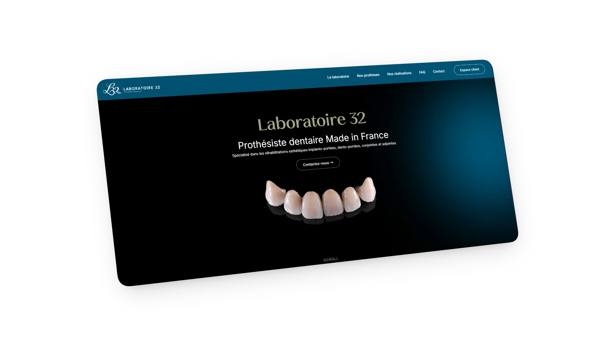

Un site dark mode pour un prothésiste dentaire, avec un outil intégré qui permet aux dentistes d'envoyer leurs fichiers 3D directement sur le serveur du labo.

Le Laboratoire 32, basé à Champagne-au-Mont-d'Or, fabrique des prothèses dentaires en France. Le labo travaille à la fois de façon artisanale et avec des outils numériques (CFAO). Ils n'avaient aucune présence en ligne et avaient besoin d'un site à la hauteur de leur travail.
Deux problèmes à régler. D'abord, créer une identité visuelle à partir du logo existant. Ensuite, trouver un moyen pour que les dentistes envoient leurs fichiers 3D sans passer par des mails ou des clés USB.
J'ai opté pour un dark mode avec des accents dorés. L'animation de particules en arrière-plan (Vanta.js) donne le côté technique sans surcharger la page. Pour la partie métier, j'ai développé un "Espace Praticien" : le dentiste dépose son fichier sur le site, et celui-ci arrive directement sur le NAS du labo. Plus de mails, plus de clés USB.
La palette "Bleu Pétrole & Or" tranche avec les sites médicaux classiques en blanc. Le labo se démarque visuellement dès la première visite.
Les particules Vanta.js en arrière-plan et les "Stacking Cards" au scroll donnent un côté technique au site, en cohérence avec le métier du client. Le tout reste léger et lisible.
Le flux est entièrement automatisé : Formulaire, API, OneDrive, puis NAS. Les fichiers 3D arrivent sur le serveur de production du labo sans intervention manuelle.
{kind=link}
{kind=link}
{kind=link}
{kind=link}